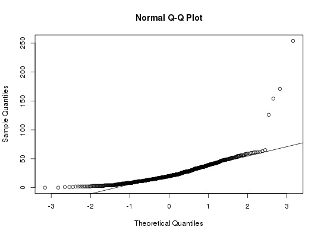

Data for Exercise 5.63
A data frame with 719 observations on the following 16 variables.
00:00
01:00 02:00 03:00 04:00 05:00
06:00 07:00 08:00 09:00 10:00
11:00 12:00 13:00 14:00 15:00
16:00 17:00 18:00 19:00 20:00
21:00 22:00 23:00Kitchens, L. J. (2003) Basic Statistics and Data Analysis. Duxbury
str(Tablrock)#> 'data.frame': 719 obs. of 16 variables: #> $ hour: Factor w/ 24 levels "00:00","01:00",..: 2 3 4 5 6 7 8 9 10 11 ... #> $ X03 : int 22 21 17 13 12 17 14 20 30 41 ... #> $ tmp : num 23.1 23.2 23.4 23.6 23.7 23.9 22.7 21.7 22.6 23.7 ... #> $ vdc : num 1.47 1.47 1.47 1.47 1.47 1.47 1.47 1.47 1.47 1.47 ... #> $ wd : int 203 22 90 50 39 0 236 178 89 76 ... #> $ ws : num 0.2 0.4 0.1 1.3 2.5 0 0.2 0.8 1.4 1.6 ... #> $ amb : num 17.9 17.4 17 16.2 15.6 16.1 17.4 20.5 22.7 24.5 ... #> $ dew : num 15.8 15.4 14.9 14.4 14.3 14.1 16 19.4 23.2 21.9 ... #> $ so2 : num 0 0 -0.1 -0.1 -0.1 -0.1 -0.1 0 0.2 0.4 ... #> $ no : num 0 0 0.1 0 0.1 0.1 0.8 0.4 0.4 0.2 ... #> $ no2 : num 0.4 0.2 0.1 -0.1 -0.1 0 0.9 0.6 1.3 0.8 ... #> $ nox : num 0.4 0.2 0.2 -0.1 0 0.1 1.7 0.9 1.7 0.9 ... #> $ co : num 0.6 0.6 0.6 0.6 0.6 0.6 0.6 0.6 0.6 0.6 ... #> $ co2 : num 0.6 0.6 0.6 0.6 0.6 0.6 0.6 0.6 0.6 0.6 ... #> $ gas : num -1.5 -1.5 -1.5 -1.5 -1.5 -1.5 -1.5 -1.4 -1.4 -1.5 ... #> $ air : num -0.06 -0.06 -0.06 -0.06 -0.06 -0.06 -0.06 -0.06 -0.06 -0.06 ... #>attach(Tablrock)The following object is masked from package:datasets: co2EDA(X03)#> [1] "X03" #>#> Size (n) Missing Minimum 1st Qu Mean Median TrMean 3rd Qu #> 629.000 90.000 0.000 11.000 23.693 20.000 22.183 33.000 #> Max. Stdev. Var. SE Mean I.Q.R. Range Kurtosis Skewness #> 254.000 19.276 371.554 0.769 22.000 254.000 40.229 4.357 #> SW p-val #> 0.000 #>t.test(X03,conf.level=.99)$conf#> [1] 21.70741 25.67891 #> attr(,"conf.level") #> [1] 0.99 #>detach(Tablrock)